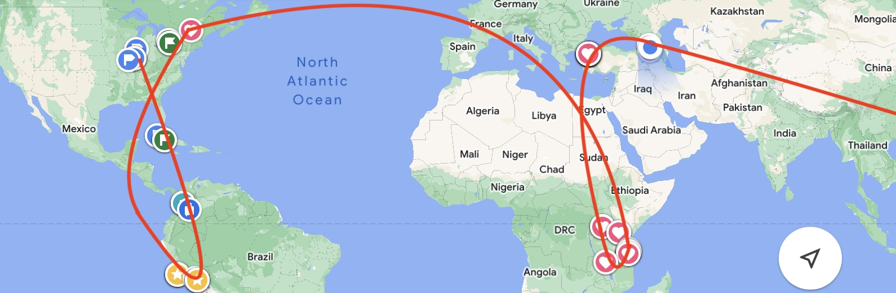

100 DAYS TRAVEL AROUND the WORLD
Comment🇺🇸🇨🇺🇨🇴🇵🇪🇲🇽🇨🇦🇹🇿🇰🇪🇺🇬🇹🇷🇬🇪
“Traveling around the world” is the most romantic experience I can imagine in my life. It’s been some time since I completed my world tour in 2023, but whenever I look back on that incredible journey, I still feel the same excitement and sense of wonder. The experience remains unforgettable. My skin became sun-kissed, and my spirit was deeply enriched. Now, I think it’s the perfect moment to document this journey as a cherished memory.
Exploration has been the rhythm of my life since childhood. My family moved frequently, which forced me to adapt to new environments often. From a countryside village to a small town, from Harbin to Shanghai, each new place broadened my perspective and reshaped my attitude toward life.
Interestingly, I was a timid boy before middle school. It’s amusing to look back and remember that I was too scared to visit a library just 2 kilometers from my home. To feel safe, I always walked to school in a group with my best friends. I think this fear may have been caused by the constant changes in my living environment. New places and unfamiliar situations easily overwhelmed me. Despite my shyness, I did my best to venture out with family and friends. A significant change occurred when I completed primary school in Harbin and my family moved to Shanghai, a sprawling international city that was very different from Harbin. The environment shifted again, but this time it felt more challenging. Summers in Shanghai were hotter and more humid, and the local accent was unfamiliar. My old friends were now 2,000 kilometers away, and I had to make new friends, learn the local dialect, and navigate a more complex city. Fortunately, I embraced this change. My parents were busy with work, so I made new friends on my own and eventually gained the courage to travel by myself. Sometimes, I even received a bit of money from my parents to fund my trips. Our family moved twice more within Shanghai, and by the time I graduated high school in 2015, I was ready for my next adventure: college in Beijing. I chose not to apply to universities in Shanghai because I wanted to explore life “outside” on my own terms. During my undergraduate years, I traveled to most provinces in China, gaining invaluable life lessons beyond the textbooks. I also worked with the Red Cross, which further expanded my learning.
Later, I pursued a Master’s degree at UIUC, expanding my expertise from civil engineering to urban planning and geography. I enjoyed blending my knowledge across fields, such as applying data analysis to policy and decision-making. After completing my degrees, I enrolled in a post-graduate program that allowed me to work for the government of Illinois, earning enough money to support my travels.By the age of 25, I found myself in an ideal situation: I had good health, a flexible schedule, and a sufficient budget. Even though I could have pursued a higher-paying job, I chose instead to explore the world and continue learning from the “outside.”
On July 18th, 2023, as the sound of the Amtrak horn echoed through Springfield train station, I picked up my bags and embarked on the long-awaited adventure of my life.
Why do I post these story one year later?
A: While traveling, my mind was filled with countless stories and new experiences, and I could only capture them by jotting notes on my phone. Now that I’ve built my own blog and returned to the normal rhythm of life, I finally have a place to share these memories and reflect on them. More importantly, this journey reminds me to keep exploring the world, even as I step into new chapters or settle into an “ordinary” life. I will continue working hard and learning from the world, again and again.
🇺🇸 Langsam beeilen
The title is a German slang phrase that means “slowly hurry/go.” I learned it from my German friend, Franz, during a volunteering project, and I fell in love with its meaning. People often want to have everything perfectly planned before starting something, but that mindset can slow you down. Nothing is ever truly perfect. “Slowly hurry/go” captures the idea of moving forward, even if you’re not fully prepared.
Similarly, my trip wasn’t perfectly planned, but once I hit the road, I knew I had made the right choice. My first stop was Atlanta and then Miami. With over 60 pounds of luggage, I flew from Chicago to Atlanta to visit Uncle Frank, my dad’s former classmate, who lives there. I stayed with him for a week, and we went fishing, worked out, and shot guns—a full “American-style” experience. It was also my first time fishing. The guide used radar and sonar to detect fish, and we managed to catch more than ten weavers. They’re tasty, but a bit tricky to cook. To top it all off, we enjoyed some Chinese food, which I had been missing so much! Time passed quickly, and before I knew it, I was on my way to Miami to catch my next flight.


In Miami, I met up with friends and did some sightseeing. One of my best friends, Cong, flew in from Boston to see me off. She brought along some essentials I would need for my travels. Cong, a lecturer at MIT, is someone I truly admire, and we even discussed some details of writing an academic paper—yes, I managed to do some research while traveling! Another friend, a former classmate, worked for a landscape architecture firm. He vented about his boss and grueling work schedule, often over ten hours a day. It made me realize how international students can sometimes be at a disadvantage in the job market. I also stayed with a British family who were my hosts. The husband was Canadian, and his wife was Cuban, and they had a son named Lin—interestingly, a typical Chinese surname. The hostess explained that she loved Chinese names. When I mentioned that Cuba was my next destination, she was surprised. She made some phone calls to her family in Cuba to check on the current situation, warning me that it wasn’t an ideal time to visit due to the poor economic conditions. Though her concerns made me a bit anxious, I still wanted to see things for myself. So, I gave her my contact information and promised to update her on my travels.
On July 28th, 2023, I left for Cuba, a mysterious country in my “world”.
🇨🇺 Mojito,Cigar and Salsa
2023/07/28 – 2023/08/15
If you ask me to recommend just one travel destination, Cuba would be my answer without hesitation! It left me with unforgettable and irreplaceable memories. From a broader perspective, as a socialist country, life in Cuba holds a certain mystery, much like North Korea, though Cuba offers a vibrant, enthusiastic atmosphere alongside stunning beaches and lush forests. One downside, however, is the year-round high temperatures. When I think of Cuba, three things immediately come to mind: mojito, cigars, and salsa. Sipping a mojito, puffing on a cigar, and dancing salsa—it’s a lifestyle all its own!
As a Chinese traveler, I’m familiar with socialism, but my society has undergone significant reforms since the 1980s. Growing up in China as a member of Generation Z, I’ve witnessed a shift toward a mixed economy, with both government and market forces playing key roles. We often refer to it as the “two hands” approach: the government oversees large infrastructure projects, like transportation, while the market drives economic optimization. This process is regulated by the government to ensure macroeconomic stability, somewhat similar to Roosevelt’s New Deal.
Cuba, however, is different—it’s more like China before economic reforms. I was curious to see how people live there, especially in the post-pandemic era. Additionally, the country’s rich history and culture were deeply intriguing to me.
The following was the notes I took during travel:
关于古巴美好的人间烟火
作为游客停留在古巴三个星期，古巴给我留下的印象是热情的音乐、适量的满足和悠然的生活。
无论在哪个城市哪个角落，音乐永远是古巴人民表达对生活热爱的方式。城市的中央广场是人们娱乐的集散地，当气温下降，孩童与大人们在这里载歌载舞抑或谈论着一天的生活。印象最深的是在Santa Clara的一个餐馆，客人会饶有兴致地加入歌唱表演，街边也会组织音乐与表演。人们脱离电子设备的束缚在音乐中拥抱现实的生活。
同时，生活也是适当的满足。政府给予每人每月一斤米一斤肉六斤豆（依城市而定）剩余的食物水果则在市场上购买，看病有免费的医疗。看起来人们不会为了赚钱而消耗自己的精力，不会为金钱而丢失自己的生活，似乎知足常乐。而我们的生活呢？谁未曾幻想着35岁退休享受生活，却在35岁时生活在自己构筑的房子、车子、度假的高墙中。
最后，生活的节奏在这里仿佛慢了一拍。随处可见的六十年代的车子好似走入电影一般。人们慢慢悠悠地在街上行走，就连猫狗都慵懒地躺在地上。一切关于时间的记忆都停滞了，加之全年炽热的温度，仿佛忘记了今夕何夕，今天的一切与昨日的一切没有任何变化。
关于古巴美好背后的现实
作为独自旅行的背包客，其中的乐趣就在于与人交流，在不同城市与民宿老板聊、与同行的旅客聊、与本地的街溜子聊。上一篇记录了古巴的美好，这一篇就片面地记录下我所了解到的现实的古巴生活。
作为社会主义，市场经济在古巴寸步难行，但如果政府没有工作机会了呢？想象一下九十年代下岗后却无法从事个体经济，这就是古巴的现状。在古巴你会发现虽然四面环海，却没人垂钓，为何？因为违法！普通人很难有资格钓鱼，同样其他的个体经济如果没有购买许可证都是违法（抓到两年起步）那如何购买许可证？用美元或欧元！这就是为何人们在黑市上换钱，然而汇率变化得可怕（3月份1美元换150，8月份1美元换250）那没有钱又没有工作怎么办？黑市街边的生意成为他们最后的生存方式。
那在古巴的工资如何呢？政府最低工资2k比索，护士8k比索，警察10k比索。这么看可能没有概念，我来举个例子在哈瓦那我一顿饭就会吃掉2k+比索，一升牛奶2k比索。在这里牛奶成为了奢侈品。
那离开古巴呢？困难至极。首先护照、签证等一系列的成本极高，只有少数家庭有能力送孩子出国。但去年也有近百万年轻人离开古巴，其中也包含走线的(tb)。有的人划着小船去福罗里达，有的人在墨西哥徒步戈壁，当然一个大浪或者大漠孤烟就会让人永远沉眠。
在古巴，城市或许是最糟糕的地方，就像温铁军先生说的，城市的人失去了土地的后盾。十年前来过古巴的越南老哥跟我说哈瓦那在沉沦，贫困、能源紧缺、食品水紧缺、衣服紧缺、医疗资源紧缺。村落和小镇的人们或许是幸福的，因为食物能够自给自足，对于精神的追求也可以通过烟酒与音乐来满足。
记忆最深的是在哈瓦那街头与我攀谈的失业大叔。几个月前工厂关闭，没有了任何经济来源，皮肤由于快速消瘦叠了好几层皮，但自己还有两个孩子要养。他与我谈起中国建方舱医院只用了两周，眼神中露出了敬佩的目光。我刚想说这是靠人们夜以继日的加班来实现的，而年轻人更想要朝九晚五的工作，但看到他的目光我把话吞了回去。或许对于他而言，工作就是一种莫大的幸福了，而我们或许在追求不同的目标。与他聊了一个下午，他哽咽我无奈，最后给了他1k比索我买下了他的故事。
所以，这看起来安逸的生活是我们追求的吗？作为旅人，我还是很喜欢古巴，这里安逸的生活、热情的人们、停滞的时间，或许仅仅停留在旅行的层面。
Here is the English translation:
On the Beautiful Aspects of Cuba’s Everyday Life
As a tourist staying in Cuba for three weeks, the impression Cuba left on me was one of passionate music, modest satisfaction, and a leisurely lifestyle.
In every city and corner, music is always the way the Cuban people express their love for life. The central square of a city is a hub of entertainment. When the temperature drops, children and adults gather there to sing, dance, or talk about their day. What impressed me the most was a restaurant in Santa Clara, where guests enthusiastically joined in the singing performances, and music and performances were organized on the street. People, free from the constraints of electronic devices, embraced real life through music.
At the same time, life is also about appropriate contentment. The government provides each person with one jin (half a kilogram) of rice, one jin of meat, and six jin of beans (depending on the city) per month. The rest of the food and fruit is bought at the market. Medical care is free. It seems that people do not exhaust themselves trying to earn money and do not lose their lives for the sake of money; they appear to be content with what they have. And what about our lives? Who hasn’t fantasized about retiring at 35 to enjoy life, but at 35, we find ourselves trapped in the high walls of the houses, cars, and vacations we’ve built.
Lastly, life here seems to slow down a beat. The sight of cars from the sixties makes you feel like you’ve stepped into a movie. People stroll leisurely on the streets, and even the cats and dogs lazily lie on the ground. All memories of time seem to have stopped. Combined with the scorching temperatures all year round, it feels as if people have forgotten what day it is; today is no different from yesterday.
On the Reality Behind Cuba’s Beauty
As a solo backpacker, the fun lies in communicating with people, chatting with guesthouse owners in different cities, fellow travelers, or local street dwellers. The last article recorded the beauty of Cuba; this one will one-sidedly document the reality of Cuban life as I understand it.
As a socialist country, market economy struggles in Cuba. But what if the government doesn’t have job opportunities? Imagine being laid off in the 90s without being able to engage in private business; that’s the current situation in Cuba. In Cuba, you’ll find that although it is surrounded by the sea, no one fishes. Why? Because it’s illegal! Ordinary people have little chance to fish. Similarly, other private businesses are illegal without a permit (which comes with at least a two-year sentence if caught). And how do you get a permit? With dollars or euros! That’s why people exchange money on the black market, but the exchange rates fluctuate terrifyingly (from 150 pesos for 1 dollar in March to 250 pesos in August). So, what do you do if you have no money and no job? Street business on the black market becomes their last means of survival.
What about wages in Cuba? The minimum government salary is 2,000 pesos, 8,000 pesos for nurses, and 10,000 pesos for police officers. These figures might seem abstract, so let me give you an example: in Havana, I could spend over 2,000 pesos on just one meal; a liter of milk costs 2,000 pesos. Milk has become a luxury here.
And what about leaving Cuba? It’s extremely difficult. The costs of passports, visas, and other paperwork are prohibitively high, and only a few families can afford to send their children abroad. Still, nearly a million young people left Cuba last year, some of whom took dangerous routes (tb). Some rowed small boats to Florida, and others trekked across the deserts of Mexico. But, of course, a big wave or a desert storm could result in eternal sleep.
In Cuba, cities may be the worst places, as Mr. Wen Tiejun said, city dwellers have lost the backing of the land. A Vietnamese friend who visited Cuba ten years ago told me that Havana is sinking into poverty, with shortages of energy, food, water, clothes, and medical resources. Villagers and small-town residents might be happier because they can be self-sufficient in food and find spiritual satisfaction in tobacco, alcohol, and music.
What I remember most is a conversation with an unemployed uncle on the streets of Havana. A few months ago, his factory closed, leaving him without any income. His skin sagged from rapid weight loss, yet he still had two children to support. He spoke admiringly of China’s ability to build a makeshift hospital in two weeks. I was about to say that this was achieved through people’s around-the-clock overtime, while young people would rather have a nine-to-five job. But seeing the look in his eyes, I swallowed my words. Perhaps, for him, having a job is a great blessing, while we might be pursuing different goals. We talked for an afternoon; he choked up, and I was helpless. In the end, I gave him 1,000 pesos and bought his story.
So, is this seemingly leisurely life what we are after? As a traveler, I still love Cuba, with its easy-going life, warm people, and time standing still, but maybe only on the level of a travel experience.
🇨🇴 One Week of Solitude
Cuban travel left me with remarkable memories, and its breathtaking nature deeply touched me. I’m certain I’ll return one day, and it will be fascinating to observe the changes over time. After Cuba, my next destination was Colombia. Though my seven days there weren’t long, they were packed with excitement. The vibrant Hispanic culture and rich history are unlike any other. It’s no wonder Gabriel García Márquez wrote One Hundred Years of Solitude.
Bogota: Potential Danger
Having lived in small towns in the U.S. for quite some time, the sight of skyscrapers felt unfamiliar to me. Bogota, like many other major cities, is deeply divided—while the northern district is relatively safe, the south is known for its dangers. I spent an entire day walking around the city, visiting various museums. I planned to stay in Bogota for four days, with visits to the National Museum, the Gold Museum, and the Botero Museum.
The National Museum covered Colombian history and the unity of its people. I’ve always been fascinated by history, but I knew little about South American history, so this visit filled some gaps. Colombian history is quite isolated, with a lot of focus on the Inca Empire and a period of Spanish colonization, but not much else. I found the museum a bit dull as it mostly explained how Colombia came to be and how its people united.
The Gold Museum, however, was much more intriguing, showcasing how gold was used for decoration and jewelry-making. Unfortunately, an earthquake interrupted my visit. It was my first earthquake experience—a 6.0 magnitude quake shook the building. At first, I was slightly confused, having never experienced an earthquake before, but I quickly realized what was happening and moved to a safe corner. I didn’t leave the museum right away, thinking the visit would soon resume, but the staff asked everyone to evacuate, as the museum was closing.
Interestingly, the earthquake led to me making a new friend—she was standing next to me when it happened. Since my museum tour was cut short, I bought her a coffee, and we spent the afternoon exploring the city together. She was supposed to take a bus home that night, but the service had been canceled due to the earthquake.
The following day, I hiked up to a mountain viewpoint overlooking Bogota. The city is large but heavily polluted. Despite that, the weather was pleasant, even slightly chilly. In the afternoon, my new friend and I continued to explore the city, discovering Márquez Plaza, a music performance by university students, and a celebration for Bogota’s 500th anniversary.
At night, however, Bogota felt dangerous. People warned me not to take my phone out of my pocket due to the risk of theft. Drug activity increased after dark, making it difficult to even catch an Uber. In fact, drivers refused to go to the southern district. I found the situation shocking.
Medellin: A City with a Drug-Fueled Past
After four days in Bogota, I set off for my next destination—Medellin. Known for its drug history and innovative cable transportation system, Medellin is also famous among urban planners like me. The city’s cable cars connect slum communities on the surrounding mountains to the urban center, making resources like education, transportation, and healthcare more accessible.
Before arriving, I researched the safer, wealthier areas of the city with lower crime rates. When I landed, Medellin initially seemed poorer than Bogota, but as the Uber drove deeper into the city, I saw beautiful, clean neighborhoods that felt completely different. Near my hotel, I discovered a Korean restaurant owned by a fellow UIUC graduate who surprisingly also spoke Chinese.
The next day, I visited Comuna 13, Medellin’s most famous slum. It wasn’t at all what I expected. The streets were filled with people doing business, and it was incredibly lively. Music and dancing were everywhere. The walls were covered in vibrant street art, some of which had small bullet holes—a haunting reminder of the slum’s violent past. This area was once a base for gangs and criminals, where children as young as 15 were forced to transport drugs, and gunfire was a daily occurrence.
As someone who has never experienced such chaos, it was difficult to comprehend how people survived in those conditions. During my stay, I joined a city walk led by a tour guide who shared his personal experiences. As a child, he had to hide behind walls on his way to school, and his sister was murdered by criminals. Crime was rampant, and drugs tore families apart. On that walk, I witnessed a man and a woman openly taking drugs, a thief stealing a phone, and a girl lying on a bench in a strange, drug-induced state.
Overall, Colombia is a complex country. Its history is marked by pain—colonization and drug-related violence—but it’s also home to warm, kind people and beautiful, diverse landscapes.
🇵🇪 Respect Mountain
While traveling, I made it a point to collect bracelets from each country I visited. In total, I visited ten countries and collected ten bracelets, but the one I bought in Peru was my favorite. Outside a small shop along the streets of Cusco, a bracelet adorned with geometric shapes, mainly continuous triangles, caught my eye. The shopkeeper explained that the design symbolized respect for the mountains. In a country like Peru, where mountains are everywhere, it made sense. I believed that the ancestors of Peruvians must have both revered the mountains for providing shelter and feared the disasters they could cause. Like them, I love exploring mountainous regions, but I do have a slight fear of altitude sickness.
Leaving for Peru was thrilling, as it was my first time traveling to the Southern Hemisphere. I was eager to experience new things, like seeing water whirlpools spin clockwise! Once I landed in Lima, I visited several museums to learn more about the country’s history. Larco Museum was one of my favorites, offering a glimpse into Peru’s rich cultural past with marvelous artifacts that made me feel like I was traveling through time.
Machu Picchu: One of the New Seven Wonders of the World
Our world is full of mysteries, and as individuals, we often struggle to understand its basic rules. For me, experiencing it through observation and touch is key. That’s how I felt on my journey to Machu Picchu—it was love at first sight! From Lima, I flew to Cusco, the small town that serves as a gateway to Machu Picchu. Every tourist passes through Cusco to reach this remarkable site. I spent a few days there to acclimate to the high altitude, and then took a bus to Aguas Calientes, which involved a 7-hour mountain road trip followed by a 3-hour hike along railway tracks. It was exhausting, no doubt, but I made many friends along the way. They were young travelers like me, from Argentina, Chile, Brazil, and Israel, and their company made the journey much easier.
Though my legs and feet ached, I was eager to finally see Machu Picchu. On the second day, I stood in awe of this wonder. The structures were perched atop the mountains, and I marveled at how the Inca people managed to build them, transporting massive stones from the valleys below to the peaks above. While there, I met a fellow traveler, a Chinese woman working in Colombia, who had traveled solo across much of Latin America. Before leaving, a group of Peruvian kids asked to take a photo with me. I was flattered—not only because they wanted a photo, but because it reminded me of how, as a child in China, I had been fascinated by foreigners and wanted to take pictures with them. Now, I had become the foreigner in their eyes.
One of my favorite memories from Machu Picchu was on the ancient Inca Trail. I encountered a group of elderly tourists walking in a line toward me. I greeted each one and high-fived them as if I were an athlete—it was a spontaneous and joyful moment I’ll never forget. Though I regret not recording it, the memory is etched in my mind.
Rainbow Mountain: The Highest Place I’ve Ever Been
Rainbow Mountain, at over 5,000 meters above sea level, was the highest place I’ve ever visited, and the altitude made it hard to breathe. The tour started at 4 a.m. Yes, 4 a.m.! Our guide drove a van packed with fellow tourists. Two days earlier, I had a severe stomach ache, which led to fever and vomiting in the middle of the night. I probably should have canceled the tour, but I was determined to go.
After a nearly three-hour drive, we arrived at the base of Rainbow Mountain. The sight was breathtaking—dozens of colors streaked across the surface of the mountain, with Peru’s highest snow-capped peak in the background. We stopped at an altitude of 4,800 meters, and the final 400 meters were up to us. The combination of altitude sickness and my lingering stomach pain drained my energy. At first, I kept pace with the lead group, but soon I had to slow down and follow the majority. Thankfully, my tour guide gave me a “magic” yellow liquid to inhale, and my symptoms disappeared almost immediately. I still don’t know what it was—maybe a mix of mint and something else—but it worked like a charm.
Step by step, I finally reached the summit. The view was absolutely stunning, and I couldn’t help but feel deep gratitude for this natural wonder.
🇲🇽 🇨🇦 A Pause
As I was preparing to leave for Canada, an unexpected issue arose—my U.S. visa had expired, preventing me from transferring flights in the U.S. I had to cancel my original flight and quickly find an alternative solution. Since all my flights were already booked, delaying any part of my trip would be costly. Fortunately, I managed to get a ticket to Cancun, Mexico, and another from Cancun to Montreal. My Canadian visa allowed me to stay one night in Mexico.
I have to admit, the cost of traveling in Cancun was high! Uber wasn’t available at the airport, and the taxi to the hotel zone was expensive, as was the food. However, the beach was pristine, and the water was crystal clear—no wonder so many Americans vacation here. It was my first time in Mexico, and all I knew about the country beforehand were stories of drug cartels, Aztec ruins, and illegal immigration. Visiting Mexico gave me a fresh perspective and helped dispel some of the stereotypes I had.
The next day, I flew to Montreal, where I planned to visit a couple who were friends from my undergraduate days. They were both pursuing PhDs and living in Montreal. I stayed in a shared dorm with ten other people and spent my time exploring the city, discovering many French influences in its streets and culture.
Afterward, I took a train to Toronto, where I was supposed to meet Cong and visit Niagara Falls together. Unfortunately, her flight was canceled due to a storm, so I decided to go to Niagara Falls on my own. The falls were immense, and the mist from the water created its own microclimate. It was a sunny day overall, but right near the falls, it felt like it was raining.
I stayed in Canada for five days, preparing myself for the next leg of my journey: Africa! This was the part of my trip I was most excited about.
🇹🇿 First Glance at Africa
In this blog, I will update multiple times from now on once I recall any piece of stories in Zanzibar, Tan. It is really fun that series of experience come back to my mind even years later, right? It is this experience that make me recall stories again and again. Basically, my trip to Tanzania consisted of two parts, volunteering in Zanzibar and road trip crossing the country.
First Glance
Speaking of Africa, what is your impression? Wild life, poverty, desert, or chaos? When I mentioned Africa to my friends in China, they all had negative attitudes toward this place. The sterotype included poverty, starvation, danger, and high temperature! However, for me, since I had lots of African friends in school and work. All gave me a positive side, pure environment, wild life, friendly people and nice weather. Why were they different than my imagination? To answer this question, I flew 20 plus hours from Canda to Tanzania.
New Friends
When I landed in Dar es Salaam, a harbor city in Tanzania, it was 11 pm. I ordered a pickup from my hotel. With his favor, I purchased a SIM card and directly arrived at the hotel. It was around 15-minute ride from airport, but the road condition was not well-mentained. I obtained vehicle broken on road without any street light available. I felt a little bit concerned as well. Thankfully, I arrived there safe and sound. The room was a family suite where I enjoyed pretty huge room myself. And I had AC and a mosquito net in my room. I was satisfied with it, and had a video call with my family members to share my happiness. Actually, I did not tell them my plan in Africa until I got there. They were shocked but still supported me.
Next day, I took a ship to an island, Zanzibar, where I would spent three weeks volunteering at a school. At the port, Two guys who claimed as staff helped me carry my luggage and change paper ticket. I was supposed to give them some tips, maybe around $5. However, they were not happy with the amount, and they wanted $20. Since this was my first time here, I paid them $20 to forbid argument with them. Later on, I knew it should not be that expensive. I was cheated. I was optimistic about it because we have to pay something to learn a new country.